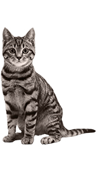
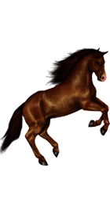
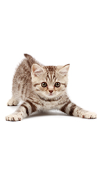

-

8 августа – Всемирный день кошек
Сегодня во всем мире отмечают День кошек. Эта дата появилась в 2002 году по инициативе Международного фонда по защите животных.
-
В Казахстане нужно
вводить уголовную ответственность за деяния, приведшие к гибели животного, считает министр экологии, геологии и природных ресурсов Магзум Мирзагалиев.
-
Зооактивисты Актау
обеспокоены случаями отравления как бездомных,так и домашних питомцев. Животные умирают в муках,порой страдая в агонии несколько дней,
-

В Северо-Казахстанской
области ввели новые правила выпаса сельхозживотных. Теперь их нельзя оставлять без присмотра. Иначе, бродячий скот может оказаться на специальных штрафстоянках.
-

Вопиющий случай жестокого
обращения с животными произошел в Нур-Султане, сообщает корреспондент «Хабар 24».
-
Отлов животных
и образование | Блогеры 2.0 14:38, 29.07.2020 801 Потенциально хайповая тема набирает обороты в казахстанском сегменте Фейсбука. Судя по постам, на днях прошло заседание маслихата столицы